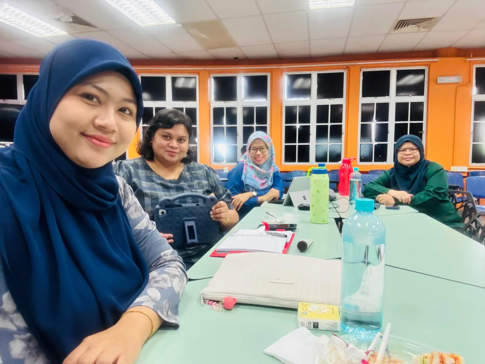
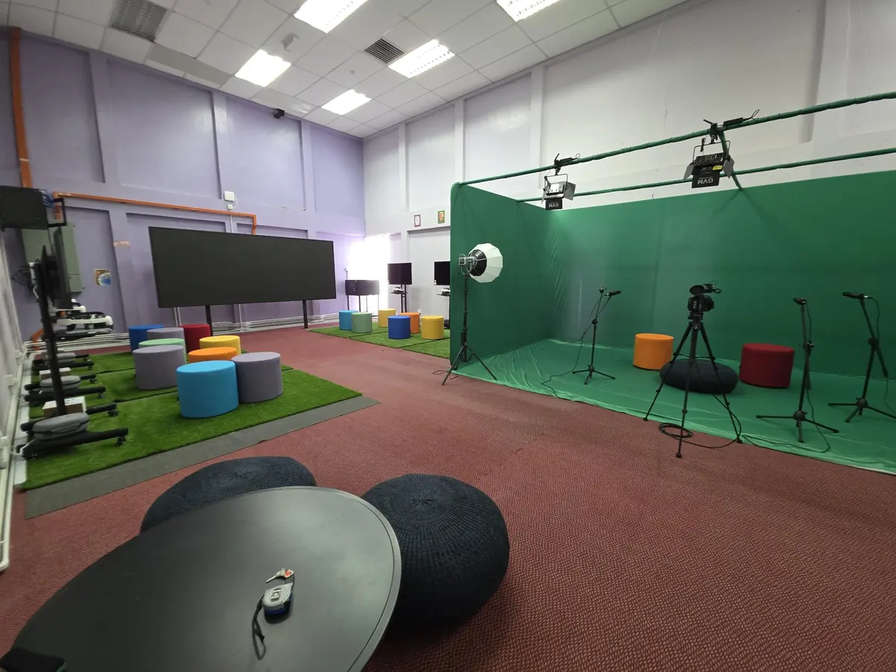
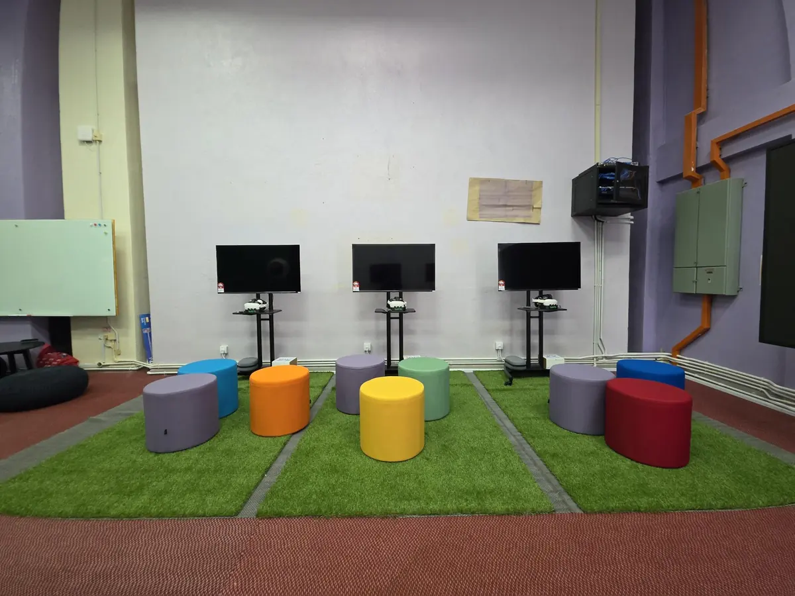
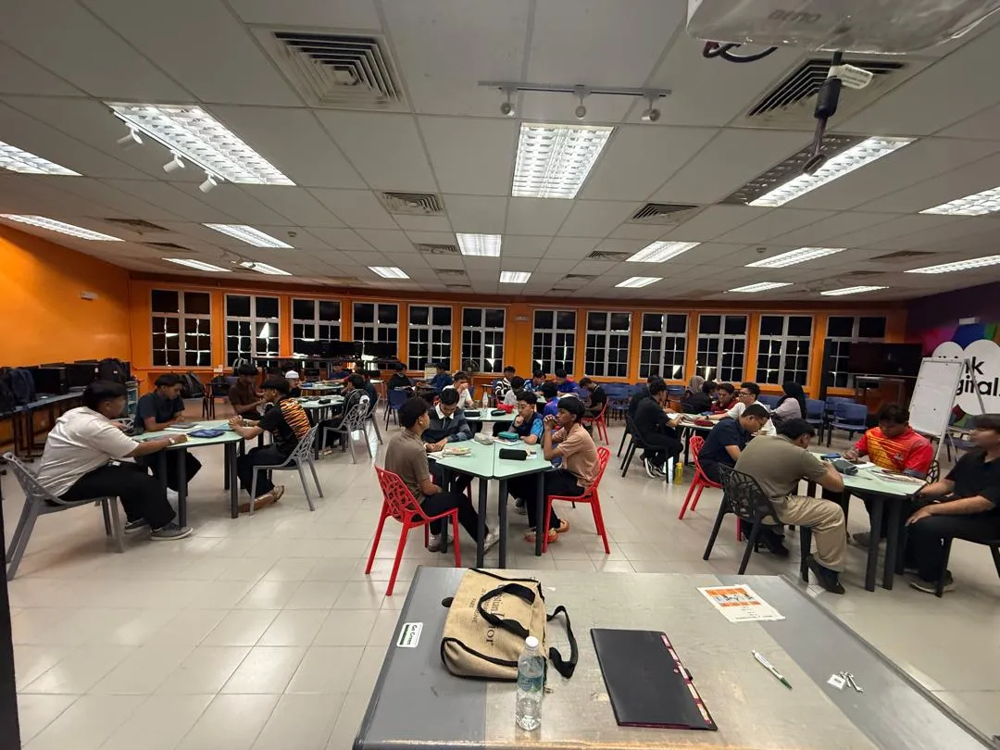
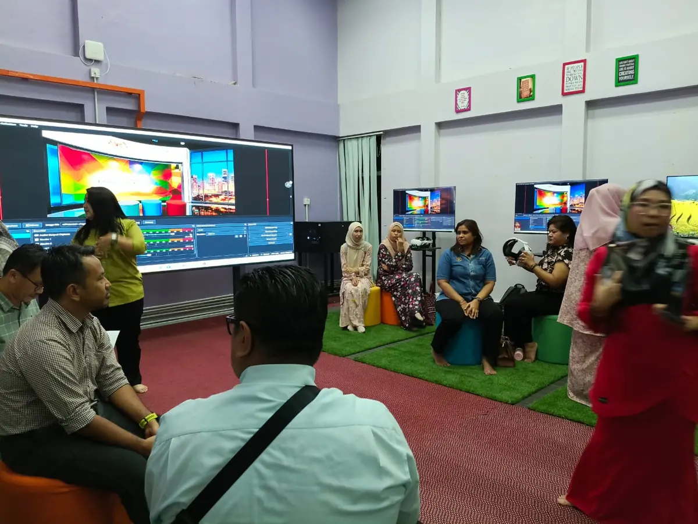

Dari kolaborasi.
Ke inovasi imersif.
Terokai bagaimana TECC 2.0 dan TECC 4.0 menyokong pembelajaran kolaboratif, teknologi imersif dan inovasi digital di POLIPD.
Pilih ruang untuk membuka laporannya.
TECC ialah Technology-Enabled Collaborative Classroom: bilik darjah abad ke-21 yang direka untuk belajar bersama.

RUANG KOLABORATIF / 01TECC 2.0
Berkolaborasi. Berinteraksi. Belajar bersama.

RUANG IMERSIF / 02TECC 4.0
Hayati. Cipta. Terokai tanpa batas.
Bukti bagaimana VR digunakan untuk membimbing pelajar Diploma Senibina Bangunan. Finalis AKRI 2026.
Satu kesinambungan, bukan laporan terpisah.
- 2024Asas
Membina asas
TECC 2.0, pembelajaran kolaboratif, TECCgogy dan pengurusan ruang.
Laporan 2024 ↗ - 2025Kemajuan
Memperkukuh ekosistem
Integrasi PdP, perkongsian pengetahuan dan permulaan TECC 4.0 Digital EyeZ. 532 jam PdP berjadual.
Arkib 2025 ↗ - 2026Transformasi · kini
Daripada kolaborasi kepada imersi
TECC 2.0 dan TECC 4.0, teknologi XR, ARCHI-SPACE dan inovasi pendidikan.
Laporan 2026 ↗ - 2027+Aspirasi
Memulakan perjalanan baharu
Ruang pembelajaran termaju lebih luas, AI, pendidikan imersif dan kerjasama strategik.
Hala tuju yang dicadangkan, bukan komitmen yang telah disahkan.
Teknologi yang memberi kesan kepada pembelajaran.
Bukan sekadar peralatan canggih: lihat bagaimana ruang ini digunakan oleh pelajar dan pensyarah.



Semua rekod yang boleh disemak.
Angka berdasarkan rekod tempahan, log aktiviti dan papan pemuka induk TECC.